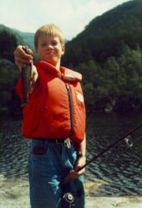

Forel is hier volop aanwezig, in grootte variërend van 110 gram tot 250 gram. Bovendien kunt u vissen op bergforel en paling.
Zolang u bij ons te gast bent kunt u op een deel van het terrein vrij vissen. U kunt ook goedkope visvergunningen kopen voor
grotere gebieden in de buurt. Een boot en een kano liggen vrij ter beschikking in het meer 300 meter van ons terrein.
Het is ook mogelijk om op zalm te vissen. Op korte loopafstand van onze boerderij is er een zalmrijke rivier met een jaarlijkse
“oogst” van 1000 kilo zalm. Er kan daar ook op zeeforel worden gevist. Voor ongeveer 100 kronen per dag kunt u daar vissen
en met een beetje geluk heeft u op de terugreis een paar flinke zalmen in uw bagage. Niet ver hiervandaan zijn er nog meer
bekende zalmrivieren zoals de Årdalselva (30 minuten rijden) en de Suldalslågen ( 1 uur rijden).
We wonen slechts 4 kilometer van een diepe fjord waar u op zeevis kunt vissen. Als u daar geen geluk heeft kunt u nog altijd
naar de monding van de fjord, bij het dorpje Hjelmeland, reizen. Op beide plaatsen hebben we een boot liggen.